SECHS WEGE, AN DIE EIGENEN GRENZEN ZU GEHEN: DIE VIELFÄLTIGE WELT DER ULTRAMARATHON-FORMATE
Von Berggipfeln bis zu Wüstendünen: Entdecke die einzigartigen Herausforderungen und Belohnungen jedes Ultramarathon-Formats.
DIE DISZIPLINEN IM ÜBERBLICK
Nicht alle Ultramarathons sind gleich. Auch wenn sie alle durch ihre Distanz definiert sind – alles, was über 42,195 Kilometer hinausgeht –, unterscheiden sich die Wege, auf denen Läuferinnen und Läufer diese Distanzen bewältigen, stark. Verschiedene Formate fordern unterschiedliche Aspekte der Ausdauer und verlangen unterschiedliche Strategien. Diese Formate zu verstehen, ist der Schlüssel, um deinen Weg im Ultralauf zu finden.
TRAIL-ULTRAMARATHONS
Das gebräuchlichste Ultra-Format.
BERGULTRAMARATHONS
Diese Rennen konzentrieren sich auf vertikale Höhenmeter und Herausforderungen in großer Höhe.
BACKYARD-ULTRAS
Ein modernes Format: Die Teilnehmenden laufen ununterbrochen Runden von 6,7 Kilometern, bis nur noch eine Person übrig ist.
WÜSTEN-ULTRAMARATHONS
Diese Rennen durch raue Wüstenlandschaften verlangen außergewöhnlichen Umgang mit Hitze und mentaler Stärke.
ETAPPENRENNEN
Mehrtägige Veranstaltungen, bei denen an 5-10+ Tagen jeweils unterschiedliche Distanzen zurückgelegt werden.
STRASSEN-ULTRAMARATHONS
Diese Rennen finden auf Straßen und Landstraßen statt und überwinden lange Distanzen auf vergleichsweise direkten Routen.
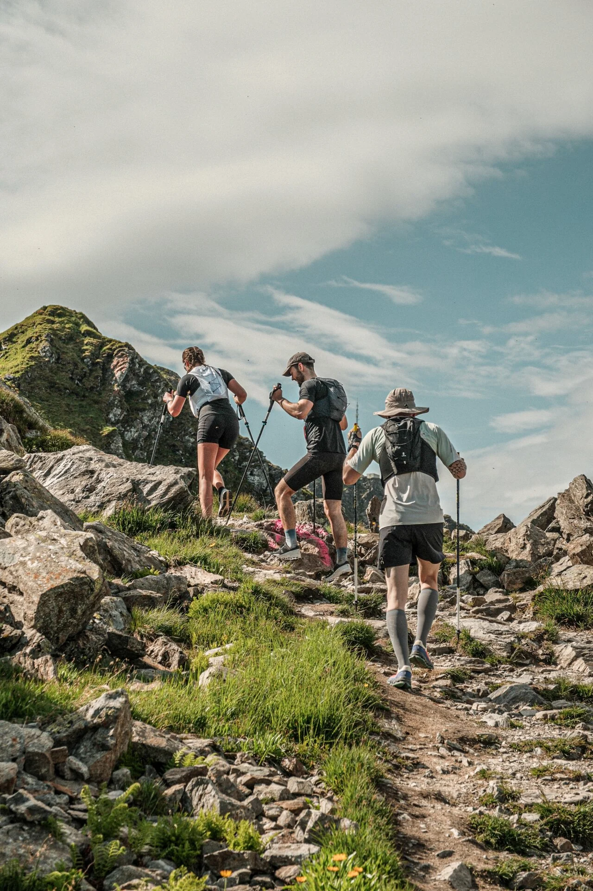
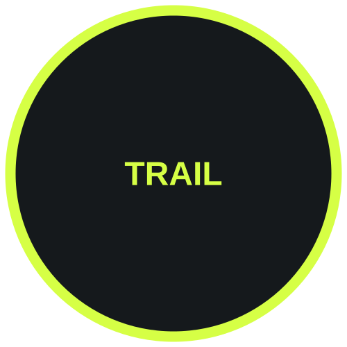
TRAIL-ULTRAMARATHONS
Das gebräuchlichste Ultra-Format. Diese Rennen finden auf Bergpfaden, Waldwegen und natürlichem Gelände statt. Die Distanzen reichen typischerweise von 50K (31 Meilen) bis 100 Meilen oder mehr. Trail-Ultras betonen technisches Fußwerk, Orientierung und den Umgang mit Höhenunterschieden.
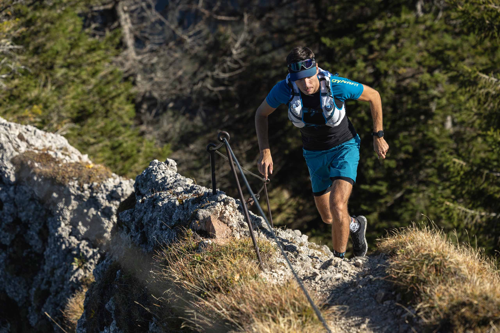
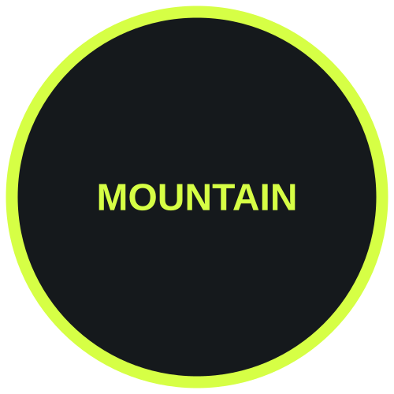
BERGULTRAMARATHONS
Diese Rennen konzentrieren sich auf vertikale Höhenmeter und Herausforderungen in großer Höhe. Ein Berg-Ultra kann kürzer sein, verlangt aber extremes Bergaufsteigen. Sie fordern die Beine über lange Anstiege, oft durch alpines Gelände oberhalb der Baumgrenze.
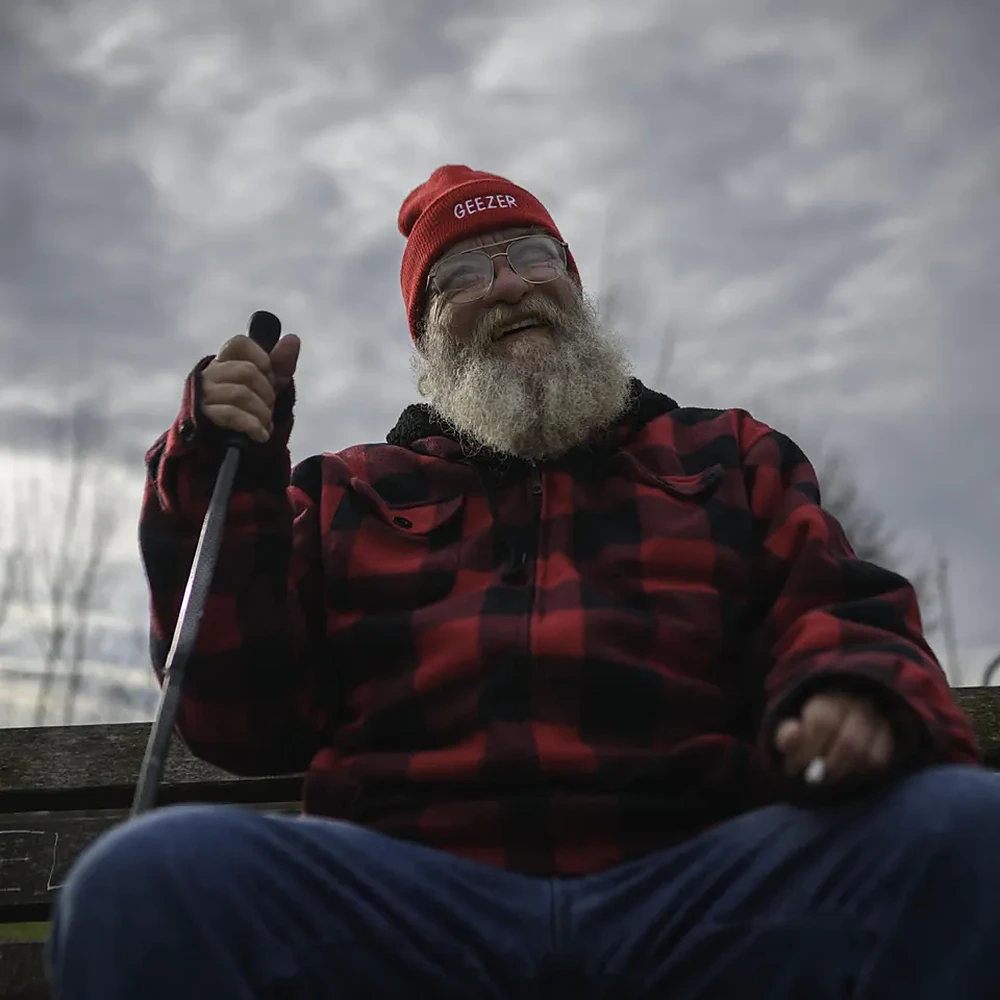
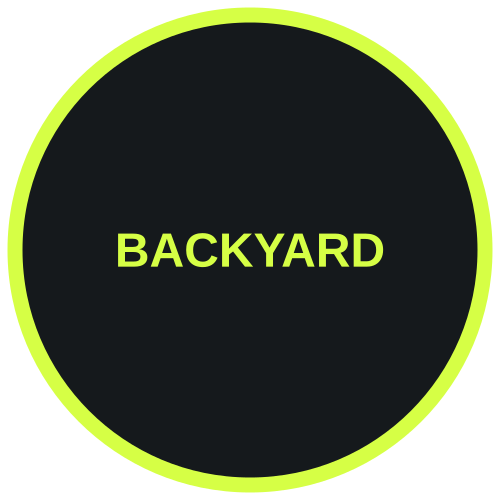
BACKYARD-ULTRAS
Ein modernes Format mit einer besonderen Wendung: Die Teilnehmenden laufen ununterbrochen Runden von 6,7 Kilometern, bis nur noch eine Person übrig ist. Jede Runde muss innerhalb einer Stunde absolviert werden. Big's Backyard Ultra in Bell Buckle, Tennessee, hat diesen Trend begründet und internationale Popularität gewonnen.
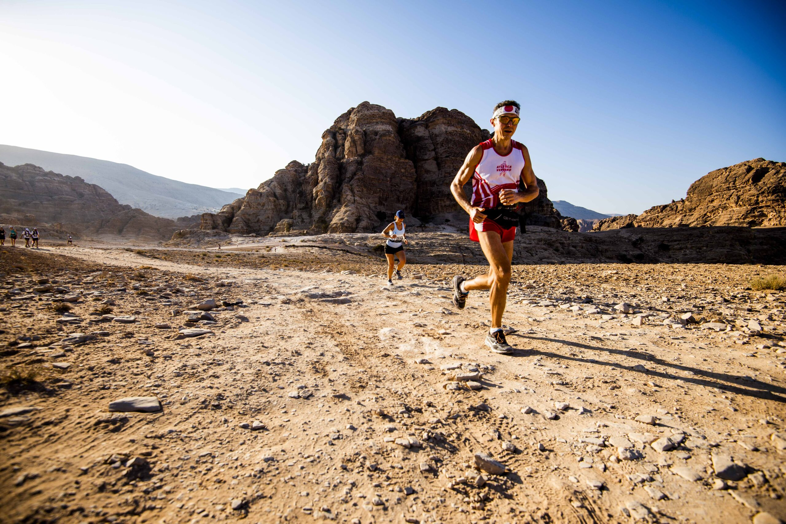
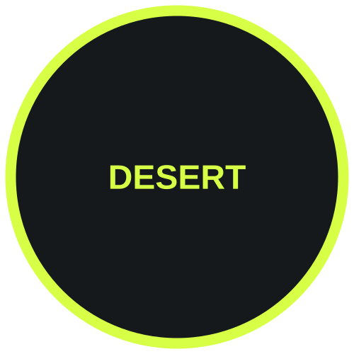
WÜSTEN-ULTRAMARATHONS
Diese Rennen durch raue Wüstenlandschaften verlangen außergewöhnlichen Umgang mit Hitze und mentaler Stärke. Der Marathon des Sables ist der bekannteste: Er führt über 250 Kilometer durch die Sahara und dauert sechs Tage. Läuferinnen und Läufer müssen ihre eigene Verpflegung und Ausrüstung mitführen, mit Karten navigieren und extreme Temperaturen bewältigen.
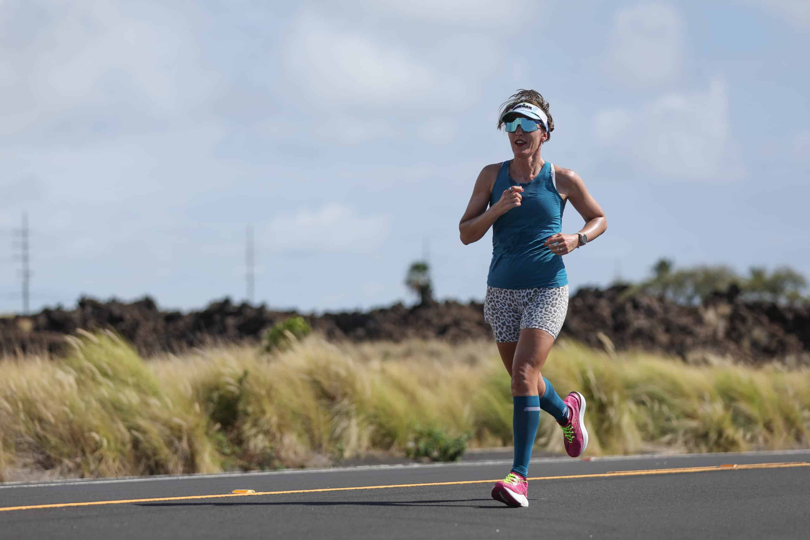
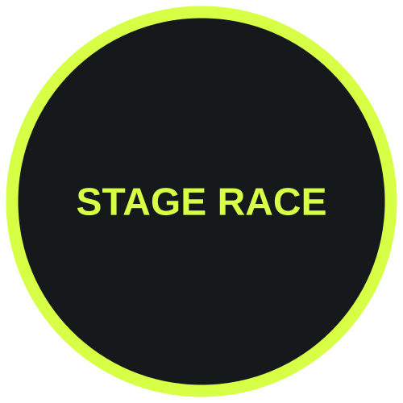
ETAPPENRENNEN
Mehrtägige Veranstaltungen, bei denen an 5-10+ Tagen jeweils unterschiedliche Distanzen zurückgelegt werden. Die Teilnehmenden übernachten typischerweise im Zeltlager oder in einfachen Unterkünften zwischen den Etappen. Bekannte Beispiele sind der Marathon des Sables und der Drakensberg Grand Challenge.
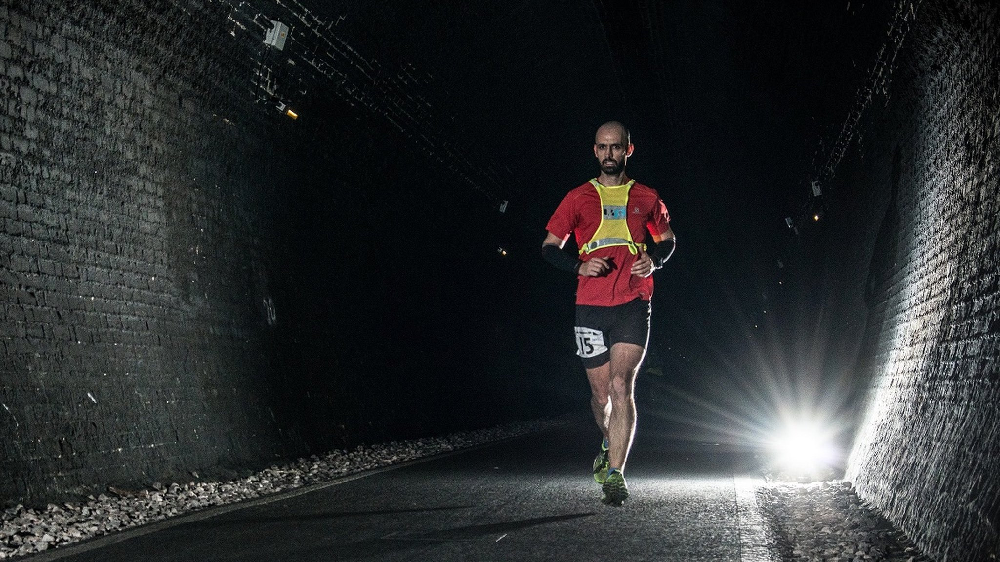
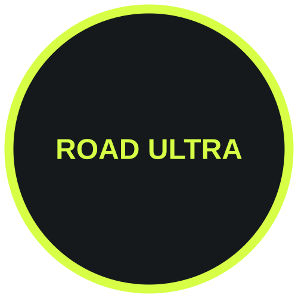
STRASSEN-ULTRAMARATHONS
Diese Rennen finden auf Straßen und Landstraßen statt und überwinden lange Distanzen auf vergleichsweise direkten Routen. Straßen-Ultras reichen von 50K bis 100 Meilen oder mehr. Auch wenn sie weniger anspruchsvoll wirken als Trail-Ultras, bringen sie eigene Herausforderungen mit sich: ständige Stoßbelastung, mentale Eintönigkeit und die Verpflegung auf langen Strecken. Bekannte Straßen-Ultras sind der London-Brighton-Lauf und verschiedene 100-Meilen-Straßenrennen.
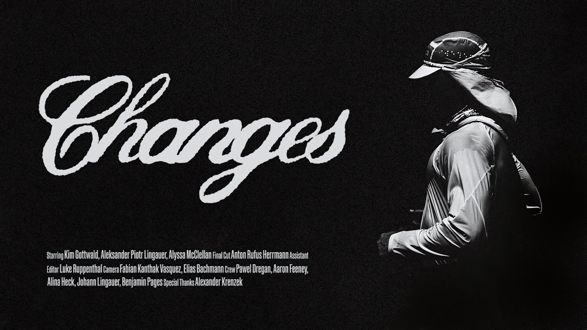
CHANGES – a rappid. backyard documentary
Kim Gottwald
Backyard-Dokumentation: Training, Entwicklung und Praktisches.
AUF YOUTUBE ANSEHEN →AUF EINEN BLICK
Von Marathon bis 386 km
So funktioniert ein Backyard-Ultra
WUSSTEST DU?
Straßen-Ultras werden unterschätzt – 120+ Meilen auf Asphalt sind außergewöhnlich anspruchsvoll.
Das Backyard-Ultra-Format wurde 2011 erfunden und ist seit 2015 stark populär geworden.
Etappenrennen ziehen internationale Teilnehmende an, weil sie als Reiseveranstaltungen angelegt sind.
Der erste moderne Ultramarathon gilt als der Comrades Marathon (1921), ein 90-km-Straßenrennen.
Etappenrennen sind gesellschaftliche Ereignisse, bei denen sich über die Tage hinweg eine Gemeinschaft bildet.
Berg-Ultras haben aufgrund der Höhe und der Schwierigkeit des Geländes oft niedrigere Zeitlimits (in Stunden).